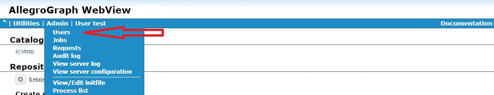
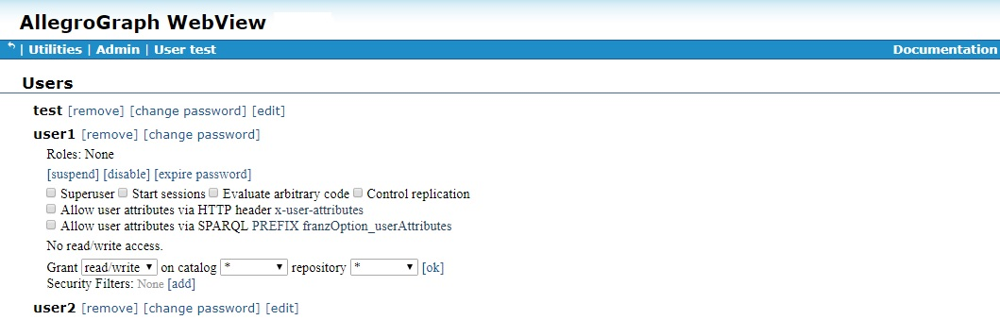

Introduction
AllegroGraph allows specifying users and giving each user specific permissions which allows certain operations and forbids others. An initial superuser is created when AllegroGraph is installed. A superuser has full power to do anything to a running AllegroGraph. Additional superusers can be created and also users with less power. An anonymous user (who can log in without a password) can also be permitted.
Note that certain permissions (particularly the Evaluate arbitrary code permission) effectively allow a knowledgeable user to act like a superuser even without formal superuser privileges. These permissions are noted when they are described below.
AllegroGraph supports Role Based Access Control (RBAC). A role is a collection of permissions. A user who is assigned a particular role has all the permissions of that role (as well as, perhaps, additional permissions separate from the role). Roles are simply a convenience which allows a standard set of permissions to be quickly given to a user.
Managing users
Users have names and (except for anonymous users) passwords. They also have permissions which allow them to perform some actions and not perform others. They may have roles (see Managing roles below).
Users are managed primarily with AGWebView and agtool. The REST/HTTP interface can also be used to manage users and roles. In this document, we describe the AGWebView and agtool interfaces in detail and make only passing mention of the REST/HTTP interface.
Certain configuration directives affect users. These are listed in the Top-level directives for account management section of the Server Configuration and Control document. These affect things like password requirements, automatic suspension or disabling because of lack of use or apparent improper use, and specialized choices like SuperUserCanAccessAllData, which specifies whether superusers can access data by default or must first add access for themselves (an action that is added to the audit log if auditing is enabled). These options must be specified in the configuration file and cannot be changed in a running AllegroGraph server. To change these directives, edit the configuration file and then restart the server.
Allowable user and role names
User and role names may consist of any chacacters except \ (backslash), : (colon), / (forward slash), ~ (tilde), or those characters with code below 32 (that is control characters). The names "." and ".." are also not permitted.
Managing users with agtool: general comments
agtool user is the most powerful and flexible way to manage users (the REST/HTTP interface is as powerful but not as convenient, while the AGWebView interface lacks some features).
agtool user help displays the various operations.
agtool user <operation> --help displays usage for a specific operation. The general form is
agtool user [--server server-spec] <operation> [options] user The --server argument defaults to --server localhost:10035. server-spec can be HOSTNAME or HOSTNAME:PORT or SCHEME:HOSTNAME:PORT or SCHEME://[user:password@]HOSTNAME:PORT. (SCHEME is http or https.)
If the user who started the AllegroGraph server is executing agtool user on the machine on which AllegroGraph server is running, agtool user will then run under the same uid that the AllegroGraph server is running under. In that case, agtool user acts as if it is being run by a superuser even if the user and password are not specified. This behavior is called OS authentication. It is common for production versions to be run this way, and it is also typical for users who are testing personal copies.
A superuser can run any agtool user operation. Other users can run some (generally those that provide information about themselves and in some cases set information, like passwords).
The list of operations include:
- help - Display user usage.
- info - Prints information about the user.
- list - Prints a list of all users.
- expire - Expires password for a user.
- remove - Removes a user.
- add - Adds a user.
- unsuspend - Unsuspends a user account.
- suspend - Suspends a user account.
- disable - Disables a user account.
- enable - Enables a user account.
- set-password - Sets password for a user
- remove-roles - Removes role(s) from a user
- add-roles - Adds role(s) to a user
- permissions - Modifies a user by adding or removing permissions.
- revoke - Revokes specified access rights for specified repos from a user.
- grant - Grants specified access rights for specified repos to a user.
We describe adding/removing users, and granting and revoking permissions and access in separate sections below, and then other commands in an other operations section.
Managing users with AGWebView: general comments
Only a superuser can add or remove users and can change the permissions of a user. Superusers can also change a user's password, though that can also be done by the user if the PasswordChangeAllowed configuration directive is yes (the default).
Superusers have access to the Admin menu, and it includes a Users item which, when chosen, displays the Users Page.

The User page displays a list of current users:
AGWebView tools for managing users start on this page. In what follows, we assume things are being done by a superuser and the User page is displayed at the start of any set of instructions.
Adding and removing a user
When AllegroGraph is configured after installation (see Server Installation) a single user, with superuser privileges is created. Then, if agtool archive restore or agtool archive restore-settings is called (with appropriate arguments, see Backup and Restore), existing users from an existing AllegroGraph (perhaps an earlier version) are added along with all their permissions and roles.
To add a new user or to remove a user, use AGWebView or agtool user as follows.
Adding a new user with AGWebView
Only a superuser can add a new user. When logged in as a superuser, display the Admin menu and choose Users to display the User page, which displays a list of current users, and a link after the list to add a new user:
Clicking on that link displays a dialog asking for the new user name and password (we have filled in the name user3 and a value for the password):
clicking on Ok adds the new user. See below for information on specifying the permissions of the new user.
The User page displayed above already had three users (test, the initial superuser, and user1 and user2). Note that each has a [remove] link next to the username. Clicking on that will remove a user (after confirmation in a dialog box).
Adding a new user with agtool
The general form of the command for adding a user with agtool user is
agtool user add [--server <server-spec>] username [password] A user with name username and password password is added. password is shown as optional but is required unless username is anonymous (the single username which can allow passwordless access).
The general for for removing a user with agtool user is
agtool user remove [--server <server-spec>] username Anonymous access
A special user named anonymous can be created without a password. This can be done in AGWebView or with agtool user as described above, leaving out the password. anonymous (the case is significant, all lowercase) is the only user account that can be created without a password.
If such an account exists, anyone who can access the server machine over the Internet (such as machine:port) in a browser can log in as anonymous. They can then do whatever the permissions and access for anonymous allows (which is presumably not too much because otherwise this would be a security hole).
User Permissions and Access Controls
Permissions allow users to perform certain actions. Access controls control access to data in repositories (for reading, writing, or both). The general list of user permissions and access controls is displayed when the [Edit] button (which has been done for user1 in the illustration):

There are five general permissions. Those five are shown next to check boxes in the illustration above and are listed by
agtool user permissions --help Then there are access controls to individual catalogs and repositories and security filters, both described after the general permissions.
General permissions
The five general permissions are (each is listed with the name visible on the Users Page in AGWebView followed by, in parentheses, the name of the permission when using agtool user permissions):
Superuser (super) - a superuser can perform most any action, except perhaps viewing all data by default. See the
SuperUserCanAccessAllDataconfiguration directive in the Top-level directives for account management section of the Server Configuration and Control document. If a superuser does not have permission to view a repository, he/she can add it but that action will be logged by the audit process if auditing is enabled (see Auditing).Start sessions (session) - A user with the Start Sessions permission can use the AllegroGraph features that require spawning a dedicated session, such as Transactions and Social Network Analysis (SNA). If you try to use these features without the appropriate permission, you'll encounter authorization errors. This permission should be withheld from users who do not need it because it spawns back-end processes that occupy memory and consume CPU cycles.
Evaluate arbitrary code (eval) - A user with permission to Evaluate Arbitrary Code can run Prolog "select" queries. This user can also do anything else that allows executing Lisp code, such as defining Prolog select generators for SNA, or doing eval-in-server, as well as loading server-side files. This permission should be withheld from users who are not fully trusted and even among trusted users, it should be granted only to those who need it. The ability to evaluate code in the hands of a knowledgeable user is equivalent to superuser privileges.
Control Replication (replication) - The Control Replication permission allows a user to set up automatic replication of a repository across multiple servers. See Multi-master Replication and also Replication.
Allow user attributes via HTTP header x-user-attributes (user-attributes-header) - The Allow user attributes via HTTP header x-user-attributes permission allows the user to supply user attributes using the
x-user-attributesheader. See the Static filters section of the Triple Attributes document for more information.Allow user attributes via SPARQL PREFIX franzOption_userAttributes (user-attributes-prefix) - The Allow user attributes via SPARQL PREFIX franzOption_userAttributes permission allows the user to specify user attributes in a SPARQL query using the PREFIX
franzOption_userAttributes. See here in the SPARQL Reference document for more information on that prefix.
In the illustration below, we have given user1 permission to Control replication and allowed user1 to specify user attributes via the HTTP header x-user-attributes and by the SPARQL PREFIX franzOption_userAttributes:
Calling
agtool user info --server <server-spec> user1 prints
Access:
Roles:
Permissions: user-attributes-prefix user-attributes-header replication Here
Repository access controls
Users can be given permission to access data in repositories. The access can be read/write, or just read or just write.
Superusers typically have read/write access to all data unless the SuperUserCanAccessAllData configuration directive (described in the Top-level directives for account management section of the Server Configuration and Control document) has the value no (the default is yes). In that case, they must be given access to individual repositories just like all users, the only difference being they can give it to themselves (but that action appears in the audit log if auditing is enabled).
Here (from above) are the permissions for user1:
No data access is allowed, as indicated by the statement No read/write access. Access can be granted to individual repositories or groups of repositories by using the
Grant [read/write] on catalog [* ] repository [* ] [ok] command.
Clicking [ok] with those specifications (read/write, * for catalog and repository) would grant read/write access on all repositories in all catalogs. But the three boxes are drop-down menus which can restrict the choice down to a specific repo. In the next illustration, the catalog is / (the root catalog) and the repository drop-down menu has choices * (all repos in the catalog), kennedy, and myrepo.
We allow read/write access for kennedy and read access for myrepo. Now the user1 profile looks like:
and agtool user info reports
Access: root:kennedy:rw root:myrepo:r
Roles:
Permissions: user-attributes-prefix user-attributes-header replication Access can be denied by clicking [remove] next the access permission in AGWebView.
Using agtool user, grant access with
agtool user grant --server <server-spec> root:kennedy:rw root:myrepo:r (repos and access are specified by catalog:repo:
Using agtool user, revoke access with
agtool user revoke --server <server-spec> root:kennedy:rw root:myrepo:r Security filters
The final user setting is specifying security filters. Note in release 6.4.2, security filters cannot be set or removed with agtool user.
Security filters are described in more detail in Security filtering in the Security Implementation document. In short, users can be prevented from seeing triples with certain specific content (such as any triple whose predicate is
Here (repeated from above) is the profile for user1 as shown in AGWebView. All the permissions and access granted above are shown.
To add security filters. click on [Add] next to Security Filters. The following dialog appears:
Select allow or disallow and specify the subject, predicate, object, and/or graph of interest - for example disallow triples with predicate
and click Add. Now the user1 profile in AGwebView is
Other operations on users
User suspension and disabling
User accounts can be suspended or disabled. These sound similar but are distinct. Both can be done by a superuser with agtool and AGWebView but both can occur automatically under certain circumstances. Suspensions might be removed automatically but a disabled account can only be re-enabled by a superuser.
User suspension: A suspended user cannot log in to their AllegroGraph account or issue any command via tools like agtool or the HTTP REST interface which requires a username and password. Superusers can unsuspend suspended users and in certain cases, suspensions are lifted automatically. See the Top-level directives for account management section of the Server Configuration and Control document. It describes the configuration directives MaxFailedLogins and AccountUnsuspendTimeout. An account is automatically suspended if there are MaxFailedLogins in a row. The account is unsuspended automatically after AccountUnsuspendTimeout seconds (regardless of whether suspension was caused by too many bad login attempts in a row or by superuser action). Only a superuser can unsuspend an account before AccountUnsuspendTimeout seconds have passed since suspension or if AccountUnsuspendTimeout is unset.
In AGWebView, users are suspended on the Users page (displayed by the Admin | Users menu item). A suspend button is available when the information on a user is displayed, as shown (for user1) in the illustration:
Using agtool user, the following command suspends user1:
agtool user suspend <server-spec> user1 When a user is suspended, the button in AGWebView changes to unsuspend and the agtool user command to unsuspend is the same as that to suspend with suspend replaced by unsuspend.
Disabling a user: see the Top-level directives for account management section of the Server Configuration and Control document. It describes the configuration directives PasswordExpiry and PasswordExpiryGrace. An account is automatically disabled if a password expires and the grace period passes. Once an acount is disabled, it can only be re-enabled by an administrator (i.e. a supersuer). Disabled accounts are never automatically re-enabled (as suspended accounts might be).
In AGWebView, users are disabled on the Users page (displayed by the Admin | Users menu item). A disable button is available when the information on a user is displayed, as shown (for user1) in the illustration:
Using agtool user, the following command disables user1:
agtool user disable <server-spec> user1 When a user is disabled, the button in AGWebView changes to enable and the agtool user command to enable is the same as that to disable with disable replaced by enable.
User password modification
See the section Usernames and passwords in the Security Implementation for more information on the security issues associated with passwords.
In AGWebView, here is the profile of user1 on the Users page displayed (for superusers) by the Admin | Users menu item:
Note [change password] next to the username and [expire password] in the list of actions just below the Roles line.
Clicking on [change password] displays a dialog allowing a new passord to be specified.
Clicking on [expire password] expires the password. The next time user1 tries to log in, this warning and dialog will appear:
There are a number of configuration directives that control passwords. They can, if set, specify password minimum length, that passwords must contain numbers or non-alphanumeric characters, how often a password must be changed, and so on. Users may also be prevented from changing their own passwords and have to contact a superuser for assistance when a password must be set.
See the Top-level directives for account management section of the Server Configuration and Control document. It lists the directives relating to passwords.
Roles
A role is a collection of permissions and access rights. When a user is assigned a role, all the role's permissions and access rights are given to the user. Roles have names. See Allowable user and role names above for allowable names.
Roles are simply a convenient shorthand for use when multiple users will be given the same set of permissions and access rights. Instead of editing the profile for each user in the set, you define a role with the desired permissions and access rights and assign the role to each user in the set.
In AGWebView, roles are defined and listed on the Users page displayed by the Admin|Users menu item, just like users. To add a role, click [add a role] at the bottom of the Roles section of the Users page.
That displays a dialog asking for a name for the new role:
Once the role is created, it is listed under Roles. Next to its name are boxes [remove] and [edit]. Clicking [remove] removes the role (after confirmation). Clicking [edit] displays the same collection of permissions and access rights as for a user.
As we said, role permissions are identical to user permissions. See the sections starting with User permissions above for more information.
In the next picture, we have added some permissions and a security filter:
Then in the Users section, we add the tech1 role to user2:
Managing roles with agtool role and agtool user
Roles are defined and managed with the agtool role command:
agtool role help
Usage: agtool role COMMAND [ OPTIONS ] ... where COMMAND is one of:
- help - Display role usage.
- info - Prints information about the role.
- list - Prints a list of all roles.
- remove - Deletes a role.
- add - Creates a role.
- permissions - Modifies a role by adding or removing permissions.
- revoke - Revokes specified access rights for specified repos to a role.
- grant - Grants specified access rights for specified repos to a role.
The OPTIONS include --server <server-spec> which must specify a superuser. The list is similar to those agtool user commands dealing with permissions and access (and again, in this release, security filters cannot be managed with agtool role).
A role is added to a user with
agtool user add-roles --server <server-spec> user role-name and removed with
agtool user remove-roles --server <server-spec> user role-name In both cases, <server-spec> which must specify a superuser.
HTTP interface
See HTTP Protocol - SPARQL Endpoint for information on AllegroGraph's HTTP interface. The interface for managing users is here in that document.